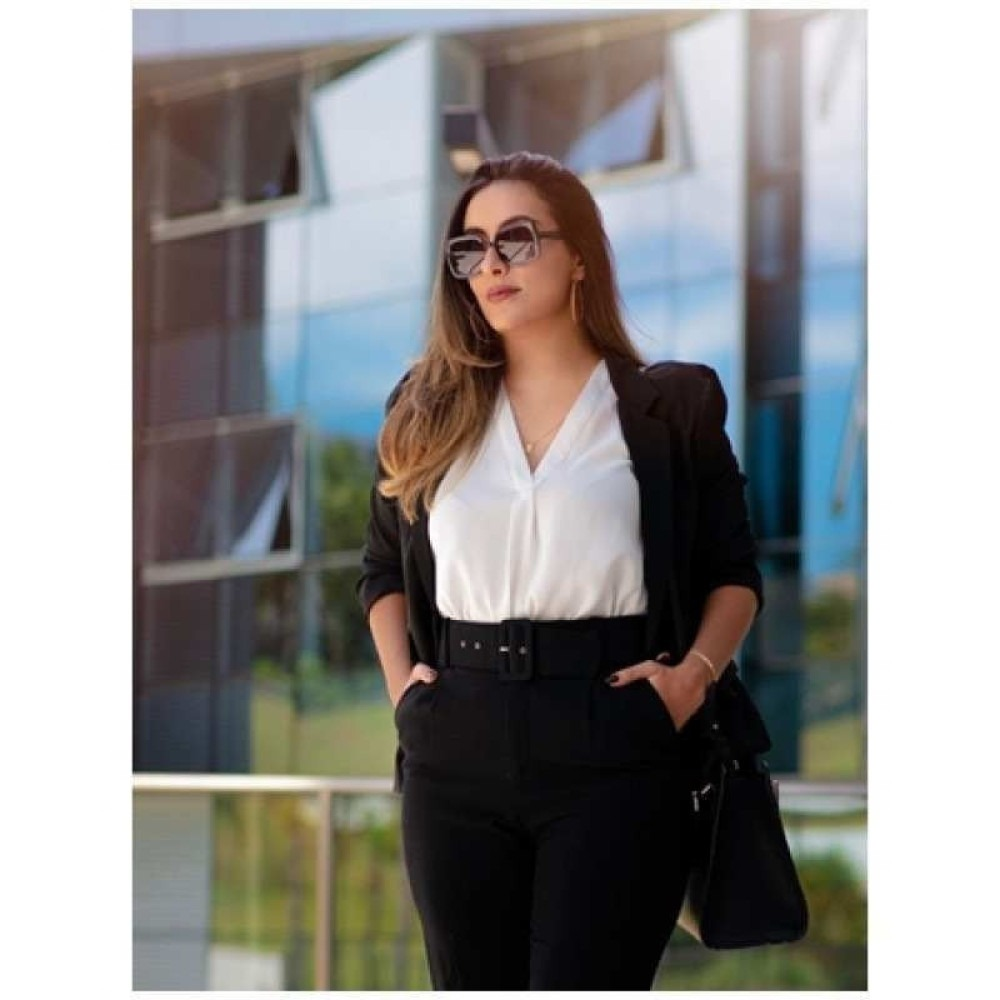

Tedências presencial
Para você que já tem que ir presencial, fica a dica! ;D
- 
Começamos com uma mulher elegante, com sua roupa de trabalho muito profissional!!

Nesse caso, já vemos a elegancia no modelo masculino, apenas o sapato que poderia ser diferente.
-

Nesse caso já vemos um homem com uma roupa formal, porém em um estilo mais casual. Recomendo.